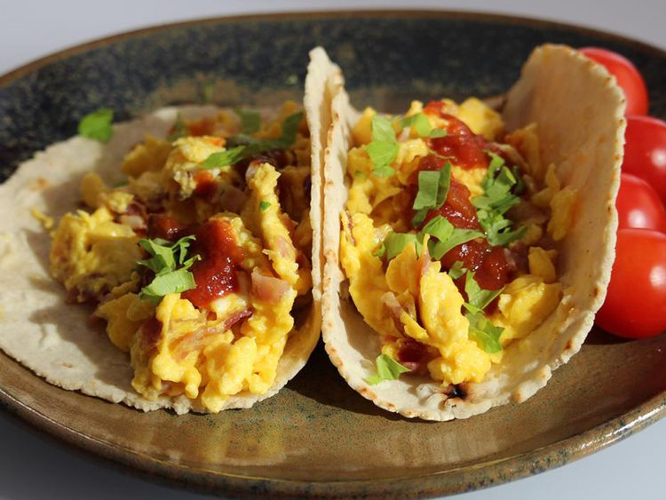

Bacon and Egg Breakfast Tacos

Description
This is a quick and easy recipe for tasty bacon and egg breakfast tacos. Serve with salsa if desired.
Ingredients
- 6 eggs
- ¼ cup crumbled cooked bacon
- 2 tablespoons butter
- 3 slices American cheese, diced
- ¼ teaspoon salt
- ¼ teaspoon ground black pepper
- 6 flour tortillas
- 1 cup salsa (Optional)
Directions
- Whisk eggs together in a bowl; stir in bacon.
-
Melt butter in a skillet over medium heat.
Add egg mixture; cook and stir until eggs are completely set,
2 to 3 minutes.
Stir in American cheese, salt, and pepper.
-
Wrap tortillas in damp paper towels;
microwave until warmed through, 30 seconds to 1 minute.
-
Spoon 1/4 cup egg mixture into the center of each tortilla;
fold sides to cover.
Serve with salsa.
Home